smell
Sivas
Sivas is a city that fascinates with its natural beauty. Those who want to spend time in beautiful nature can spend a few days in Hillside Houses (Hobbit Houses), which are the first of their kind in Türkiye. Moreover, it is possible to picnic at Paşabahçe Recreation Area and hike through paths in the greenest forest. Sivas Hobbit Hillside Houses are approximately 6 km from the city center.
Sivas is also known for its natural lakes under state protection. The Hafik Lake, which has been declared a natural and archaeological site and has been taken under protection, can be enjoyed by boat, sporting areas and hiking trails can be used, and fish-in-casserole can be tasted at the local restaurants. In Tödürge Lake, boat trips and dives can be performed and many bird species inhabiting around the lake can be observed.
Gürün Gökpınar Lake and Şuğul Valley, on the other hand, have a natural aquarium appearance with their abundant oxygen, clear turquoise blue water. Trout can be tasted in Gürün Gökpınar Lake. In Şuğul Valley, you can fill your lungs with abundant oxygen while taking the paths in the canyon. You can also eat fish at the entrance of the valley, sip Turkish coffee in the country coffee house, and watch the sights of natural beauty.
Gemerek Sızır Waterfall, which has been declared a natural protected area and taken under protection, and Koyulhisar Eğriçimen Plateau, which offers accommodation opportunities, are among the important natural beauties of Sivas.
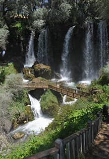
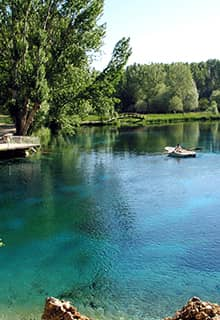
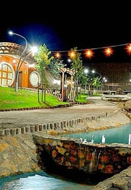
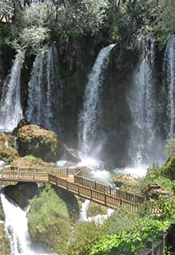
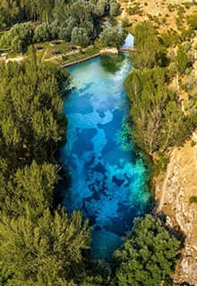
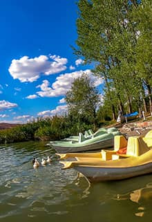
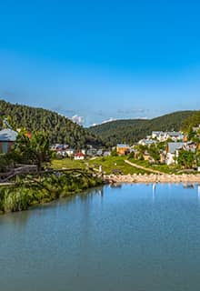
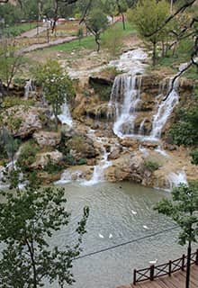
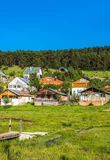
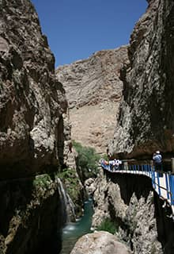
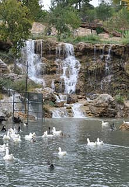
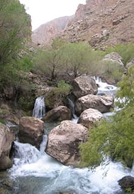
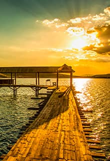
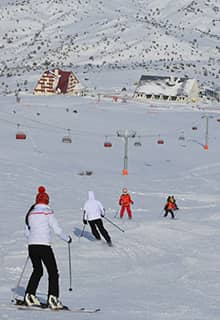
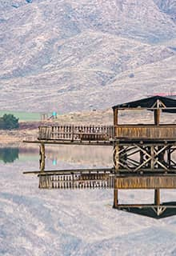